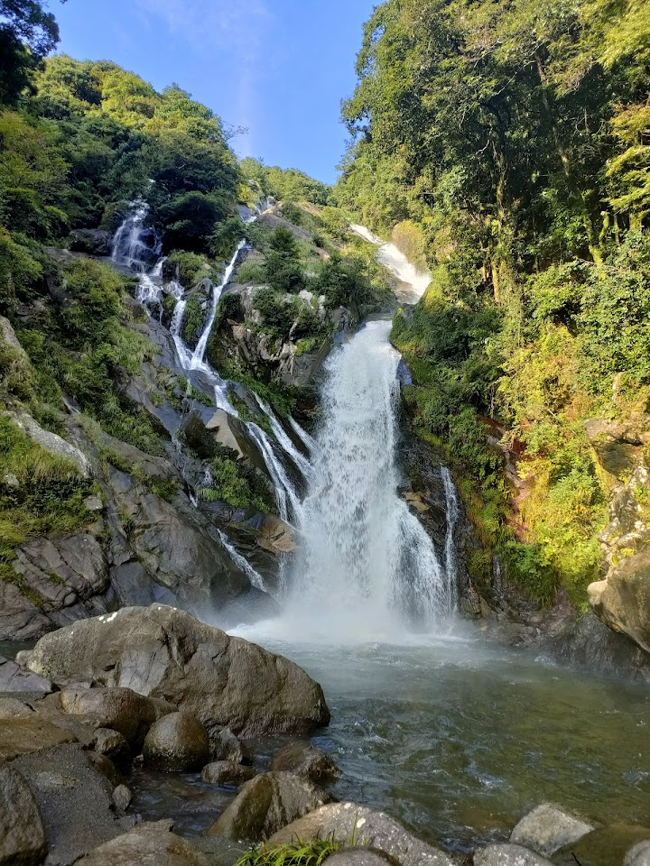
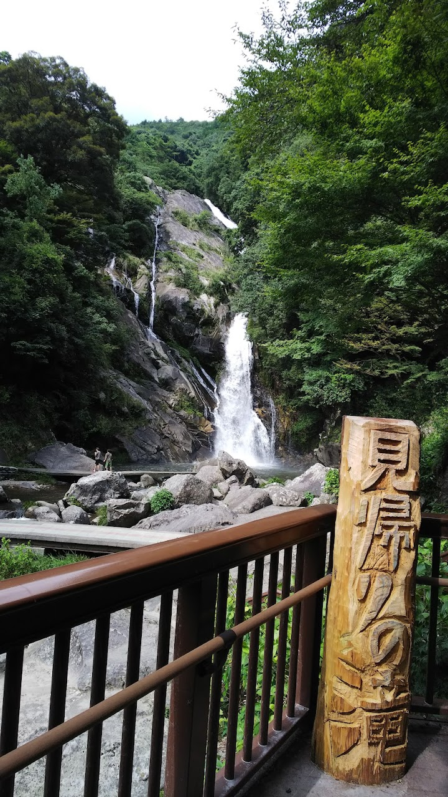
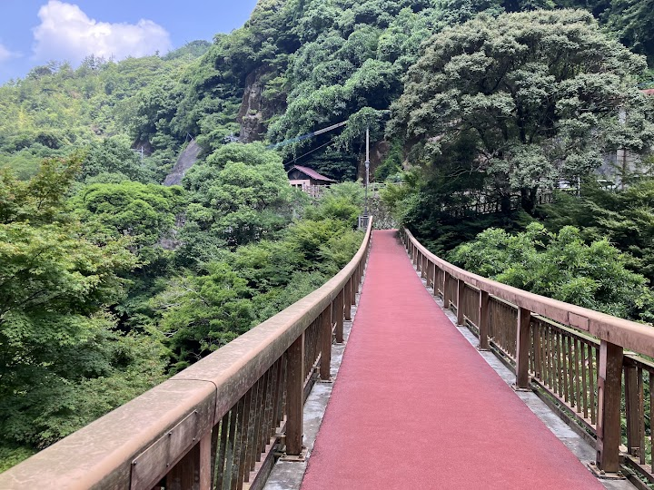
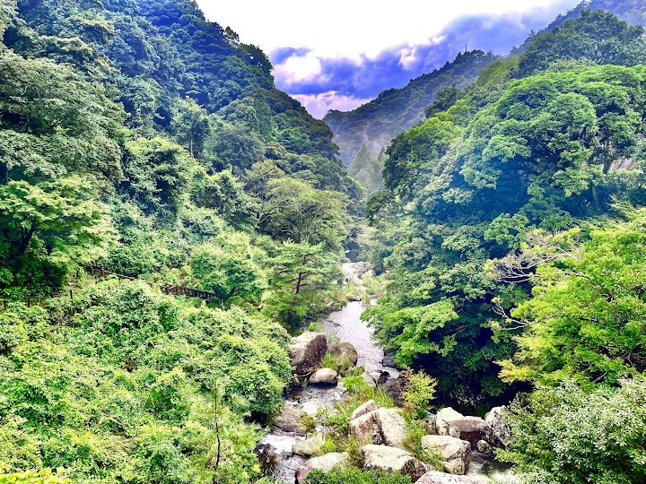
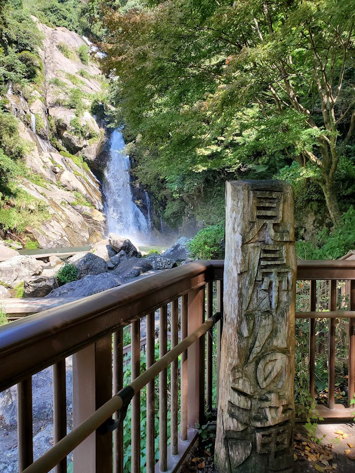

Mikaeri No Taki Falls
A riverside trail with seasonal hydrangeas leads to this dramatic cascade amid thick greenery.
Open in Google Maps (street view, more photos and reviews there)






Visitor tips on finding it and getting there
Mikaeri No Taki Falls is a lovely natural waterfall spot tucked away in Saga Prefecture. This attraction is completely free to enter, there is no admission ticket required for visitors. We visited here in early autumn, and going in the morning is highly recommended to avoid harsh mid‑day sun and bigger crowds. We did not need to wait in any queues during our visit. It is a quiet local scenic spot, so you won’t encounter long lines like busy tourist hotspots. Basic restroom facilities are available on‑site, which is really convenient for hikers and day trippers. This place is pet‑friendly, you
You don't wanna miss the Hydrangea season from this place. I heard some people called this waterfall with "Ajisai waterfall". Park your car for 500円 , quiet pricey but I think it's worthy to help the local people there. Walk for 5 mins for shuttle bus 100円 each way. The bus service it's very convenience for elderly. Disable friendly to watch the fall closely. The distance are not extremely far. Nice walk back to enjoy the Hydrangea scenic. Also there a track long away the river. Please be aware with the heat and watch your step near the waterfall during your visit!
A little busy during peak hydrangea season but well worth the trip. The trail up to the falls is an easy walk with lots of hydrangea and natural spots to appreciate along the way. At the falls it can be a little hectic with crowds, but not unmanageable. There’s a bus to the falls from the parking lot for those who can’t walk the trail. Outside of hydrangea season I imagine it’s equally beautiful.